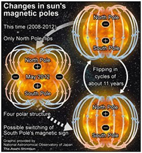
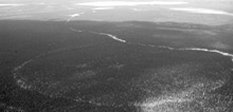

New Discoveries
Below are new discoveries about topics found on this website: |
Sun may soon have four poles, say researchers
The Asahi Shimbun -
http://ajw.asahi.com/article/behind_news/social_affairs/AJ201204200075
April 20, 2012
By SEIJI TANAKA/ Staff Writer
The sun may be entering a period of reduced activity that could result
in lower temperatures on Earth, according to Japanese researchers.
Officials of the National Astronomical Observatory of Japan and the
Riken research foundation said on April 19 that the activity of sunspots
appeared to resemble a 70-year period in the 17th century in which
London’s Thames froze over and cherry blossoms bloomed later than usual
in Kyoto.
In that era, known as the Maunder Minimum, temperatures are estimated to
have been about 2.5 degrees lower than in the second half of the 20th
century.
The Japanese study found that the trend of current sunspot activity is
similar to records from that period.
The researchers also found signs of unusual magnetic changes in the sun.
Normally, the sun’s magnetic field flips about once every 11 years. In
2001, the sun’s magnetic north pole, which was in the northern
hemisphere, flipped to the south.
While scientists had predicted that the next flip would begin from May
2013, the solar observation satellite Hinode found that the north pole
of the sun had started flipping about a year earlier than expected.
There was no noticeable change in the south pole.
If that trend continues, the north pole could complete its flip in May
2012 but create a four-pole magnetic structure in the sun, with two new
poles created in the vicinity of the equator of our closest star.

Past Horizons
Article created on Tuesday, March 19, 2013
A three year examination of
astronomical alignments found in the buildings of
researching2.htm#Latest_scientific_news_on__Astronomical_Alignments_Mesoamerican
cities has demonstrated the basis of some pre-Columbian rituals.
Archaeologist Francisco
Sánchez Nava, of the National Institute of Anthropology and History (INAH),
together with archaeoastronomer Ivan Sprajc,
from the Centre of Scientific Research of the Slovenian Academy of
Sciences and Arts, jointly developed the project “The Archaeo-astronomical
Properties of Architecture and Urbanism in Mesoamerica”.
Investigating the ancient sites for astronomical alignments
Through the research,
archaeologists are trying to establish archaeo-astronomical patterns to
see if these impacted in some way to distribution alignments and
placement of pre-Colombian cities and the main structures within
Mesoamerica. To date, 150 Maya sites have been investigated in the Gulf
of Mexico, the Central Highlands and Oaxaca, with a range of temporal
periods from the Formative to the late Postclassic (500 BCE - 1521 CE).
Based on the results so far
obtained, Sanchez Nava said that of the buildings that have had
alignment measurements taken, more than 70 per cent are solar in nature
and their functionality is undoubtedly based on an east-west direction,
with Mesoamericans mainly viewing sunrises and sunsets.
Equinox did not fit
Although the researchers have no doubt that solstice was important to
the people – with alignments found in all the archaeological sites
studied so far – the same is not true for equinox.
Perhaps surprisingly, it seems that equinox alignments are a recent
tourist based fashion which have no real basis or hard evidence,
with the results of the study reinforcing this.
Distinct repeating patterns
Sanchez Nava also explained that they found the patterns of orientation
of the buildings built in the majority of archaeological sites of the
Highlands are shared with most sites of the Maya Region, in the
lowlands, such as Chichén Itzá and Uxmal.
However, at many other Highland sites such as Tonina and Largatero,
there is a distinct and repeating pattern that still remains a mystery.
One hypothesis is the construction and alignment of these Highland Maya
sites are related to the cycles of Venus, but the researchers still lack
some vital measurements to prove this theory.
Meanwhile, on the north coast of the Yucatan peninsula, on the fringe of
Quintana Roo, Sanchez Nava Sprajc found a further alignment pattern
different from the previous two: “apparently, architectural
alignments of this region are due to the cycles of the moon.” he
said.
Sanchez Nava explained “the importance of astronomy in these
archaeological sites is beyond doubt, and that for some years it has
been accepted that Mesoamerican cities are not distributed randomly, but
by strict and defined guidelines, alignments architectural and urban
patterns, are all based on a series of observations of the environment
as the stars.”
Little hard evidence
However, he said, “the hard evidence was patchy and this is why our
project offers a significant sample size of measurements obtained using
a standardised methodology, in different cultural regions and different
chronologies, so that the results are comparable.”
They selected the same type of buildings: tall, palace types or temples
which had recognisable observational function where the horizons was
easily visible. First measurements were taken with a compass, to
determine the distribution pattern guidelines, and then with a
theodolite for greater accuracy.
The
list of sites that have been studied so far include:
Tenochtitlan, Cantona, Tenayuca, Cuicuilco (Altiplano); Monte Alban,
Mitla, Yagul, Guiengola and Copalita Bocana, Monte Negro (Oaxaca);
Comalcalco, sale, El Tajin, Quiahuiztlan, Cuauhtoxco, Castillo de Teayo
(Gulf); as well as maya area: Chichén Itzá, Uxmal, Edzná, Kohunlich,
Calakmul, Rio Bec, Coba and Tulum (in the lowlands region); Toniná and
Chinkultic, Tenam Puente, Largatero (Highlands); Palenque, Bonampak,
Yaxchilan (jungle); Izapa e old church (Pacific coast). Also, it is
Tikal, Guatemala (low lands of South).
Source: Instituto Nacional de Antropología e Historia (INAH,
National Institute of Anthropology and History)
Greenland Ice Not a
Reliable Model For Younger Dryas Period
Source: redOrbit
June 27th 2012 Ice
samples that profile Greenland glaciers have long been used to give
climate scientists historical temperature data, but those samples could
be misleading, according to a new study published Monday in the
Proceedings of the National Academy of Sciences.
A team led by University of
Wisconsin-Madison researchers found that the data gathered from the ice
cores around Greenland varies greatly from other records of Northern
Hemisphere temperatures during the Younger Dryas. Also referred to as
the “Big Freeze” — the Younger Dryas was a period of abrupt cooling that
began nearly 13,000 years ago.
“In terms of temperature during
the Younger Dryas, the only thing that looks like Greenland ice cores
are Greenland ice cores,” said Anders Carlson, a UW-Madison geosciences
professor.
“They are supposed to be iconic
for the Northern Hemisphere, but we have four other records that do not
agree with the Greenland ice cores for that time. That abrupt cooling is
there, just not to the same degree.”
While collaborating with
UW–Madison climatologist Zhengyu Liu and scientists at the National
Center for Atmospheric Research (NCAR), Carlson could reliably recreate
temperatures in the Oldest Dryas, a cooling period about 18,000 years
ago. But when using the same model to reconstruct Younger Dryas data,
the program breaks down around data culled from Greenland ice cores.
In an attempt to understand why
the Greenland samples did not match expectations, researchers found that
oxygen isotope data did not account for the sort of crash climate change
occurring during the Younger Dryas. They also realized their assumption
that prevailing winds and jet streams are dumping precipitation from the
Atlantic Ocean on Greenland was incorrect.
“The Laurentide ice sheet, which
covered much of North America down into the northern United States, is
getting smaller as the Younger Dryas approaches,” Carlson said. “That’s
like taking out a mountain of ice three kilometers high. As that melts,
it allows more Pacific Ocean moisture to cross the continent and hit the
Greenland ice sheet.”
The two oceans have distinctly
different ratios of oxygen isotopes, thus snow that originated from the
Pacific will appear much different than Atlantic snow.
“We ran an oxygen isotope-enabled
atmosphere model, so we could simulate what these ice cores are actually
recording, and it can match the actual oxygen isotopes in the ice core
even though the temperature doesn’t cool as much,” Carlson said. “That,
to us, means the source of precipitation has changed in Greenland across
the last deglatiation. And therefore that the strict interpretation of
this iconic record as purely temperature of snowfall above this ice
sheet is wrong.”
Based on the study’s findings,
the researchers said Greenland temperatures may not have cooled as
momentously as climate headed into the Younger Dryas relative to the
Oldest Dryas, because of the increased levels in atmospheric carbon
dioxide that had occurred since the Oldest Dryas.
The study also showed that
climate change is the result of a confluence of factors and determining
historical temperature trends is a highly nuanced science.
“Abrupt climate changes have
happened, but they come with complex shifts in the way climate inputs
like moisture moved around,” Carlson said. “You can’t take one
difference and interpret it solely as changes in temperature, and that’s
what we’re seeing here in the Greenland ice cores.”
Brett Smith for redOrbit.com |
Eureka Alert
June 21 2012
http://www.eurekalert.org/pub_releases/2012-06/osu-ndd061912.php
New deglaciation data opens door for earlier First Americans migration
CORVALLIS, Ore. - A new study of lake sediment cores
from Sanak Island in the western Gulf of Alaska suggests that
deglaciation there from the last Ice Age took place as much as1,500 to
2,000 years earlier than previously thought, opening the door for
earlier coastal migration models for the Americas.
The Sanak Island Biocomplexity Project, funded by the
National Science Foundation, also concluded that the maximum thickness
of the ice sheet in the Sanak Island region during the last glacial
maximum was 70 meters – or about half that previously projected –
suggesting that deglaciation could have happened more rapidly than
earlier models predicted.
Results of the study were just published in the
professional journal, Quaternary Science Reviews.
The study, led by Nicole Misarti of Oregon State
University, is important because it suggests that the possible coastal
migration of people from Asia into North America and South America –
popularly known as "First Americans" studies – could have begun as much
as two millennia earlier than the generally accepted date of ice retreat
in this area, which was 15,000 years before present.
Well-established archaeology sites at Monte Verde,
Chile, and Huaca Prieta, Peru, date back 14,000 to 14,200 years ago,
giving little time for expansion if humans had not come to the Americas
until 15,000 years before present – as many models suggest.
The massive ice sheets that covered this part of the
Earth during the last Ice Age would have prevented widespread migration
into the Americas, most archaeologists believe.
"It is important to note that we did not find any
archaeological evidence documenting earlier entrance into the
continent," said Misarti, a post-doctoral researcher in Oregon State's
College of Earth, Ocean, and Atmospheric Sciences. "But we did collect
cores from widespread places on the island and determined the lake's age
of origin based on 22 radiocarbon dates that clearly document that the
retreat of the Alaska Peninsula Glacier Complex was earlier than
previously thought."
"Glaciers would have retreated sufficiently so as to
not hinder the movement of humans along the southern edge of the Bering
land bridge as early as almost 17,000 years ago," added Misarti, who
recently accepted a faculty position at the University of Alaska at
Fairbanks.
Interestingly, the study began as a way to examine the
abundance of ancient salmon runs in the region. As the researchers began
examining core samples from Sanak Island lakes looking for evidence of
salmon remains, however, they began getting radiocarbon dates much
earlier than they had expected. These dates were based on the organic
material in the sediments, which was from terrestrial plant macrofossils
indicating the region was ice-free earlier than believed.
The researchers were surprised to find the lakes ranged
in age from 16,500 to 17,000 years ago.
A third factor influencing the find came from pollen,
Misarti said.
"We found a full contingent of pollen that indicated
dry tundra vegetation by 16,300 years ago," she said. "That would have
been a viable landscape for people to survive on, or move through. It
wasn't just bare ice and rock."
The Sanak Island site is remote, about 700 miles from
Anchorage, Alaska, and about 40 miles from the coast of the western
Alaska Peninsula, where the ice sheets may have been thicker and longer
lasting, Misarti pointed out. "The region wasn't one big glacial
complex," she said. "The ice was thinner and the glaciers retreated
earlier."
Other studies have shown that warmer sea surface
temperatures may have preceded the early retreat of the Alaska Peninsula
Glacier Complex (APGC), which may have supported productive coastal
ecosystems.
Wrote the researchers in their article: "While not
proving that first Americans migrated along this corridor, these latest
data from Sanak Island show that human migration across this portion of
the coastal landscape was unimpeded by the APGC after 17 (thousand years
before present), with a viable terrestrial landscape in place by 16.3
(thousand years before present), well before the earliest accepted sites
in the Americas were inhabited."
|
New evidence suggests Stone Age hunters from Europe discovered
America
The Independent
February 28 2012
New archaeological evidence suggests that America was first discovered
by Stone Age people from Europe – 10,000 years before the
Siberian-originating ancestors of the American Indians set foot in the
New World.
A remarkable series of several dozen European-style stone tools, dating
back between 19,000 and 26,000 years, have been discovered at six
locations along the US east coast. Three of the sites are on the
Delmarva Peninsular in Maryland, discovered by archaeologist Dr Darrin
Lowery of the University of Delaware. One is in Pennsylvania and another
in Virginia. A sixth was discovered by scallop-dredging fishermen on the
seabed 60 miles from the Virginian coast on what, in prehistoric times,
would have been dry land.
The new discoveries are among the most important archaeological
breakthroughs for several decades - and are set to add substantially to
our understanding of humanity's spread around the globe.
The similarity between other later east coast US and European Stone Age
stone tool technologies has been noted before. But all the US
European-style tools, unearthed before the discovery or dating of the
recently found or dated US east coast sites, were from around 15,000
years ago - long after Stone Age Europeans (the Solutrean cultures of
France and Iberia) had ceased making such artifacts. Most archaeologists
had therefore rejected any possibility of a connection. But the
newly-discovered and recently-dated early Maryland and other US east
coast Stone Age tools are from between 26,000 and 19,000 years ago - and
are therefore contemporary with the virtually identical western European
material.
What’s more, chemical analysis carried out last year on a European-style
stone knife found in Virginia back in 1971 revealed that it was made of
French-originating flint.
Professor Dennis Stanford, of the Smithsonian Institution in Washington
DC, and Professor Bruce Bradley of the University of Exeter, the two
leading archaeologists who have analysed all the evidence, are proposing
that Stone Age people from Western Europe migrated to North America at
the height of the Ice Age by travelling (over the ice surface and/or by
boat) along the edge of the frozen northern part of the Atlantic. They
are presenting their detailed evidence in a new book - Across Atlantic
Ice – published this month.
At the peak of the Ice Age, around three million square miles of the
North Atlantic was covered in thick ice for all or part of the year.
However, the seasonally shifting zone where the ice ended and the open
ocean began would have been extremely rich in food resources – migrating
seals, sea birds, fish and the now-extinct northern hemisphere
penguin-like species, the great auk.
Stanford and Bradley have long argued that Stone Age humans were quite
capable of making the 1500 mile journey across the Atlantic ice - but
till now there was comparatively little evidence to support their
thinking.
But the new Maryland, Virginia and other US east coast material, and the
chemical tests on the Virginian flint knife, have begun to transform the
situation. Now archaeologists are starting to investigate half a dozen
new sites in Tennessee, Maryland and even Texas – and these locations
are expected to produce more evidence.
Another key argument for Stanford and Bradley’s proposal is the complete
absence of any human activity in north-east Siberia and Alaska prior to
around 15,500 years ago. If the Maryland and other east coast people of
26,000 to 19,000 years ago had come from Asia, not Europe, early
material, dating from before 19,000 years ago, should have turned up in
those two northern areas, but none have been found.
Although Solutrean Europeans may well have been the first Americans,
they had a major disadvantage compared to the Asian-originating Indians
who entered the New World via the Bering Straits or along the Aleutian
Islands chain after 15,500 years ago.
Whereas the Solutreans had only had a 4500 year long ‘Ice Age’ window to
carry out their migratory activity, the Asian-originating Indians had
some 15,000 years to do it. What’s more, the latter two-thirds of that
15 millennia long period was climatologically much more favorable and
substantially larger numbers of Asians were therefore able to migrate.
As a result of these factors the Solutrean (European originating) Native
Americans were either partly absorbed by the newcomers or were
substantially obliterated by them either physically or through
competition for resources.
Some genetic markers for Stone Age western Europeans simply don’t exist
in north- east Asia – but they do in tiny quantities among some north
American Indian groups. Scientific tests on ancient DNA extracted from
8000 year old skeletons from Florida have revealed a high level of a key
probable European-originating genetic marker. There are also a tiny
number of isolated Native American groups whose languages appear not to
be related in any way to Asian-originating American Indian peoples.
But the greatest amount of evidence is likely to come from under the
ocean – for most of the areas where the Solutreans would have stepped
off the Ice onto dry land are now up to 100 miles out to sea.
The one underwater site that has been identified - thanks to the scallop
dredgers – is set to be examined in greater detail this summer – either
by extreme-depth divers or by remotely operated mini submarines equipped
with cameras and grab arms.
|
|
The mysterious forest rings of northern Ontario
CBC News:
Last Updated May 21, 2008
By Elle Andra-Warner  The Cheeka Ring is a ring measuring 1km. in diameter, located 20 km east of Hearst, Ont. Scientists believe it was formed by a natural gas deposit. (Courtesy S. Hamilton, OGS)
It is a strange
phenomenon: thousands of large, perfectly round "forest rings" dot the
boreal landscape of northern Ontario.
From the air,
these mysterious light-coloured rings of stunted tree growth are clearly
visible, but on the ground, you could walk right through them without
noticing them. They range in diameter from 30 metres to 2 kilometres,
with the average ring measuring about 91 metres across. Over 2,000 of
these forest rings have been documented, but scientists estimate the
actual number is more than 8,000.
What causes
these near-perfect circles in the forest?
Since they were
discovered on aerial photos about 50 years ago, the rings have baffled
biologists, geologists and foresters. Some explanations put a UFO or
extraterrestrial spin on the phenomenon. Astronomers suggest the rings
might be the result of meteor strikes. Prospectors wonder whether the
formations signal diamond-bearing kimberlites, a type of igneous rock.
We have been
working on the rings since 1998, and there have been many developments,
but there are still many unanswered questions," says Stew Hamilton, a
Sudbury-based geochemist with the Sedimentary Geoscience Section of the
Ontario Geological Survey.
Hamilton first
became interested in the rings in 1997 when Sudbury prospector and
geologist Bob Komarechka asked him about the potential kimberlite link.
Now he has some new theories about how the giant rings were created, and
his paper discussing some of the strange electrical phenomena that occur
over the rings has been accepted for publication in the journal
Geophysics.
According to
Hamilton, the forest rings are caused by giant, naturally occurring
electrochemical cells — big centres of negative charges (called reduced
chimneys) that are frequently situated over metal or mineral deposits or
methane (a natural gas source).
Think of them as
huge natural electrical batteries with a negative charge in carbonate
soil and surrounded by oxygen that carries a positive charge. The
current from the batteries — the negative charge — travels outward and
where it meets the positive charge, acidic conditions are created that
eat away at the carbonate soil, causing it to drop in a circular
depression around the natural battery.
How it all started
The origin of
Ontario's methane-based forest rings, according to Hamilton's theory,
lies in the glaciers and glacial lakes that at one time covered the
province. As the glaciers began receding from northern Ontario about
10,000 years ago, they left behind a mix of clay and other glacial
sediment.
Bacteria began
eating the dead plankton and other organic matter left in the clay, a
process that can only last a few thousand years before the organic
matter is consumed, a short time, geologically speaking. This produced
methane, a chemical that is the principal component of natural gas. In
the case of forest rings, the methane is released into the atmosphere
partly through the depressions of the rings.
So why the
perfectly formed circles?
"Because force
goes out in a circle," Hamilton says. "For example, throw a stick in the
water. At first it makes a stick shape when it hits the water, then
perfect circles go out from that. Electricity is just the same."
Gordon Southam,
a geo-microbiologist at the University of Western Ontario, has just
begun working with Hamilton on the biogeochemical aspects of forest
rings.
"We debate back
and forth on the various theories on forest ring formation. I find it
extremely interesting any time that water-rock interactions release
materials that support the growth of the biosphere; we're very
interested in litho-trophic [rock-eating] bacteria," Southam says.
"In the case of
forest rings, they appear to create anoxic [oxygen-free] conditions that
support methane-producing bacteria below ground and methane-oxidizing
bacteria near the earth's surface."
A map of forest
rings in northeastern Ontario devised by Hamilton also seems to indicate
that the creation of these anoxic conditions appears to be coinciding
with permafrost melting, which is causing new activity in the biosphere.
Why is northern Ontario lord of the rings?
Although
northern Ontario has the highest concentration of forest rings, you can
also find them in the Yukon, Quebec, Russia and Australia.
"For years, we
have been puzzled as to why Ontario has so many, and we now think we
have some of the answers," Hamilton says. "We have measured the isotopic
signature of natural gas in a number of rings, and it suggests the gas
is very geologically young and is likely still being produced today and
constantly escaping into the atmosphere. Northern Ontario has the
youngest and most extensive glacial clay deposits in the world, and
therefore we also have the most rings."
He estimates 80
per cent to 85 per cent of the region's rings are methane-based, with
the rest being a result of kimberlite; hydrogen sulfide (recognizable by
its "rotten egg” smell); metal-based sources such as nickel, copper and
zinc; or buried peat. These, too, are all sources of negative electrical
charge and have a capacity to create similar electrical fields as
methane.
"On the one
hand, the rings are a large potential source of relatively clean natural
gas. On the other hand, they are constantly venting methane into the
atmosphere, which has a greenhouse gas equivalent that is more than 20
times that of carbon dioxide," said Hamilton.
He is keen to
see companies develop technology to extract the gas and use it as
energy.
"Extracting the
gas would therefore be doubly beneficial and also fairly easy from a
technical point of view."
Source of charge unclear
And what about
those other exotic theories of forest rings?
"It is
definitely not a UFO thing, crop circles, tree-killing fungus or meteors
falling from the sky," Hamilton laughs.
He does admit,
though, that forest rings have "a million mysteries." For example, the
electrical field found inside the forest rings is a puzzle that needs to
be solved.
"It shouldn't be
there," Hamilton says. "Something is creating a huge electrical field,
and we think it might be millions of chemical-eating micro-organisms in
the soil."
Hamilton,
University of Ottawa geochemist Kéiko H. Hattori (chair of the
department of earth sciences) and graduate student Kerstin Brauneder are
the only Canadian scientists currently studying forest rings. This
summer, they will test their hypothesis by generating chemicals in test
tubes and adding some forest ring micro-organisms (bacteria) to the
chemicals.
"To see a
perfectly round forest ring in the middle of the forest is really very
strange," said Brauneder, whose master's thesis is titled Origin and
Distribution of Forest Ring-Related Methane.
"This summer,
Dr. Hamilton and I will be sampling soils over five forest rings near
Timmins and Hearst. Together with Dr. Southam, we will try to recreate a
small-scale forest ring phenomena in-vitro, in a test tube, to see where
and how methane-producing microbial communities grow. Understanding the
methane-cycle of the rings is important, because we are hoping the
methane could eventually be used as a new energy source for isolated
communities."
Calling the
forest rings the "world's largest petri dish," Hamilton said the testing
will be the first step to recreating, in the lab, the mysterious
electrical field process.
"Our hypothesis
is that with the forest rings, millions of micro-organisms are creating
a massive, low-voltage electrical field that causes their food, the
chemicals, to come forward to them. The bacteria don't have to move —
the food keeps coming to them along the electrical field they have
created," explained Hamilton.
This, he said,
also poses an intriguing question: "Are micro-organisms changing and
modifying geology?"
"It is a new
paradigm for us. What science doesn't understand is the most
interesting, and we're having a lot of fun working on the many pieces of
the strange puzzle. This is beyond science fiction — it is
unbelievable."
|